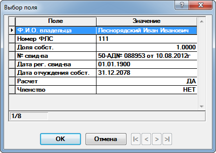

Справочник собственников участка
Данный справочник содержит в себе данные по собственникам участка (рис. 1). Допступ к данному справочнику можно получить только через справочник участков.

Рис. 1. Справочник собственников участкаРассмотрим поля, доступные для заполнения:
-
Ф.И.О. владельца - фамилия, имя и отчество владельца участка. Выбирается из справочника владельцев.
-
Номер ФЛС - номер финансового лицевого счета владельца. Выбирается из справочника ФЛС участка.
-
Доля собств. - доля собственности. Максимальное значение не должно превышать 1. (Внимание! Обязательно к заполнению. При значении 0 у всех собствеников расчет по участку не будет производится.)
-
№ свид-ва - номер свидетельства о собственности.
-
Дата рег. свид-ва - дата регистрации свидетельства о собственности. (Внимание! Дата должна быть не меньше даты начала рассчетов по этому собственику)
-
Дата отчуждения - дата отчуждения собственности. (Внимание! Для текущего владельца, если не было отчуждения, должна быть максимальной, например, 31.12.2078)
-
Расчет - признак участия в расчете. (Внимание! В случее значения НЕТ у всех собствеников, расчет по участку не будет производится.)
-
Членство - признак членства в СНТ. Для не членов взнос Членские взносы недоступен.